똑똑, 노키예요!
노치 옆에 사는 말랑한 친구예요. 일하는 동안 물 마시라고, 기지개 켜자고, 오늘 일정 잊지 말라고 살짝 말을 걸어요. 잘 챙길수록 알에서 깨어나 쑥쑥 자라요.

다섯 친구, 모두 무료예요
처음에 한 친구를 골라 알부터 키워요. 맥 상태에 반응하는 모습이 친구마다 달라요.

☁️ 몽실
구름 아기 · 다정하고 해맑아요기분이 곧 날씨예요. 배고프면 보슬비가 내리고, 오늘 물 목표를 채우면 해가 떠요.

🧶 복슬
털뭉치 · 느긋하고 호기심 많아요충전 중엔 배를 깔고 납작 엎드려요. 커서를 올리면 귀가 쫑긋 서요.

🍮 탱탱
푸딩 · 신나면 못 참는 흥부자맥이 뜨거워지면 캐러멜이 흘러내리며 녹아요. 충전 중엔 신나서 흔들흔들해요.

🌱 콩콩
새싹 콩 · 성실한 노력파오늘 물 목표를 채우면 반짝반짝 빛나요. 졸리거나 지치면 잎이 축 처져요.

🌙 마로
달토끼 마시멜로 · 차분한 밤 친구밤 9시가 지나면 이마의 초승달이 은은하게 빛나요.
가을에만 오는 친구, 은행이와 단풍이 🍂🍁
계절마다 한정 친구가 찾아와요(Noki Plus). 가을(9~11월)엔 은행 열매에서 깨어난 버터빛 찹쌀떡 은행이예요. 머리의 은행잎이 연두에서 노랑, 황금빛으로 물들고, 어른이 되면 잎 두 장을 리본처럼 달아요. 맥이 뜨거우면 잎으로 부채질하고, 오래 앉아 있으면 잎이 하나 툭 떨어져요. 한 번 만나면 계절이 지나도 계속 함께해요.

단짝 단풍이는 단풍잎 모양의 장난꾸러기예요. 아기 땐 노랑, 어린이 땐 주황, 어른이 되면 빨갛게 물들어요. 충전 중엔 빙그르 돌고, 오래 앉아 있으면 폴짝 뛰어요. 둘 다 가을에 알을 받을 수 있어요.
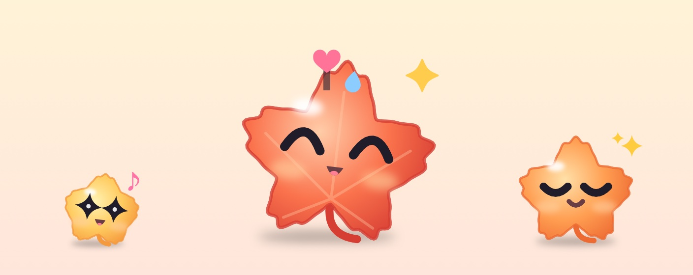
겨울엔 눈송이와 호빵이 ❄️🥟
겨울(12~2월)엔 복슬복슬한 눈뭉치 눈송이가 찾아와요. 투명한 얼음 눈꽃 왕관을 쓰고, 어른이 되면 눈꽃 날개와 배에서 빛나는 눈꽃이 생겨요. 맥이 뜨거우면 살짝 녹아요.

단짝 호빵이는 주름 잡힌 꼭지에서 김이 모락모락 나는 호빵이에요. 포근한 털목도리를 두르고, 충전 중이거나 추운 날엔 김이 더 피어올라요.
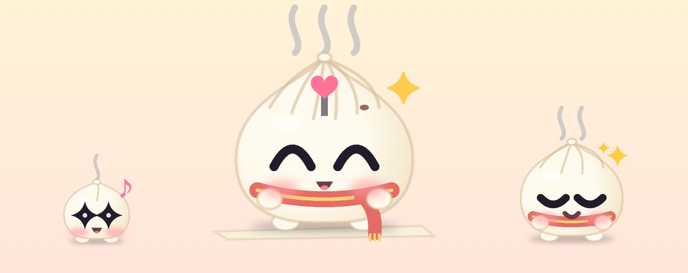
출시 후 첫 겨울에는 겨울 친구와 함께 은행이·단풍이도 만날 수 있어요(출시 기념).
기분이 얼굴에 다 보여요
평소엔 평온한 얼굴로 곁에 있다가, 무슨 일이 생기면 잠깐 표정이 바뀌고 다시 평온으로 돌아와요. 머리 옆 작은 표시(♪, 💢, !!, ?) 덕분에 노치만 한 크기에서도 한눈에 알아봐요. 13가지 표정을 다 보면 숨은 업적도 열려요.


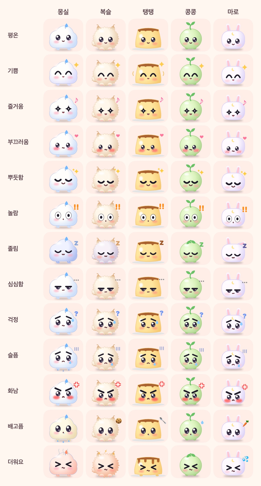
바깥 날씨도 함께 느껴요
⚙️ → 날씨에서 도시 이름만 넣으면 비 오는 날엔 우산을 쓰고, 눈 오는 날엔 귀마개, 추운 날(5℃ 이하)엔 목도리, 더운 날(28℃ 이상)엔 부채, 맑은 날엔 선글라스를 써요. 기본은 꺼져 있어요.
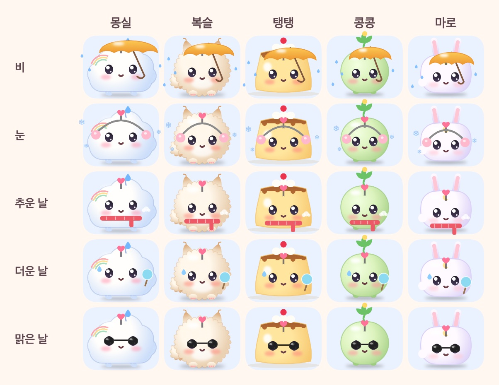
내 맥이랑 같이 숨 쉬어요
노키는 배터리, 충전, 발열, 키보드·마우스 사용, 화면 잠듦을 읽고 그대로 반응해요. 맥을 아껴 쓸수록 노키 기분도 좋아져요.
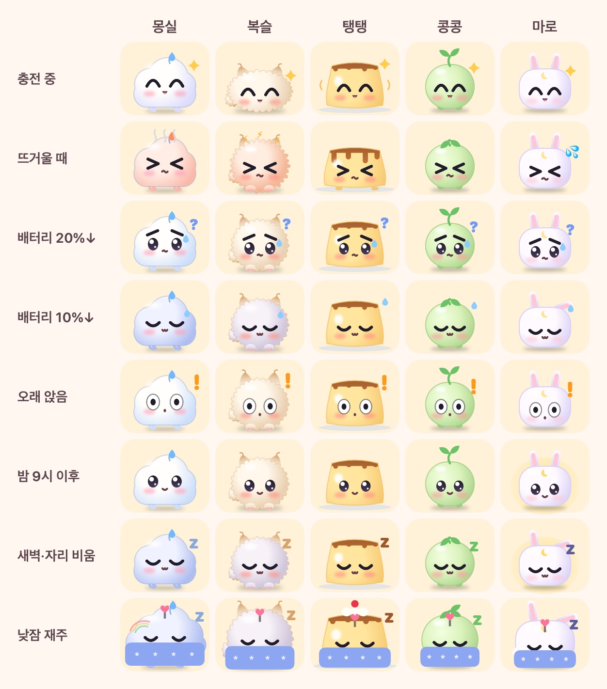
표가 잘리면 옆으로 밀어 보세요.
🔋 배터리와 충전
패널 아래에 메뉴 막대처럼 배터리와 충전 번개가 보여요. 충전기를 꽂으면 바로 번개가 뜨고, 20% 아래로 떨어지기 전에 충전하면 절제력이 자라요.
🔥 발열
맥이 뜨거워지면 "더워요" 얼굴이 되고 기분이 내려가요. 탱탱은 아예 녹아내려요.
🪑 오래 앉아 있으면
쉬지 않고 오래 쓰면 기지개를 켜자고 하고, 90분이 넘으면 걱정해요. 5분 넘게 자리를 비우면 제대로 쉰 걸로 쳐요.
🌙 늦은 밤과 잠자기
밤 9시가 지나면 마로의 달이 빛나고, 새벽엔 꾸벅꾸벅 졸아요. 새벽에 일하면 기분이 내려가고, 제때 쉬면 올라가요. 화면이 잠들거나 덮개를 닫으면 노키도 움직임을 멈추고 쉬어요.
하루를 살뜰히 챙겨 줘요
🏠 홈 탭
노키를 누르면 패널이 바로 열려요. 다음 일정, 집중 타이머, 배부름·기분·레벨, 다섯 능력치, 간식, 물, 재주를 한 화면에서 봐요. 맨 아래엔 충전 상태, 발열, CPU, 연속 사용 시간이 있어요.
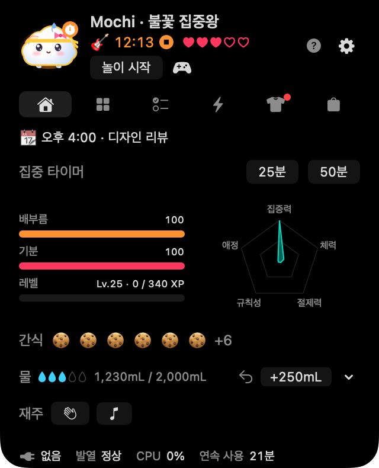

💧 물 기록
+250mL 버튼으로 톡 기록하고, 텀블러·머그처럼 컵마다 양을 따로 저장해 둘 수 있어요. 하루 목표와 알림 간격도 정해요. 실수로 눌렀다면 되돌리기. 맥을 안 쓸 때 마신 물도 "아까 마신 물 추가"로 시간과 양을 골라 넣을 수 있어요. 7일 연속 목표를 채우면 물방울 핀을 받아요.
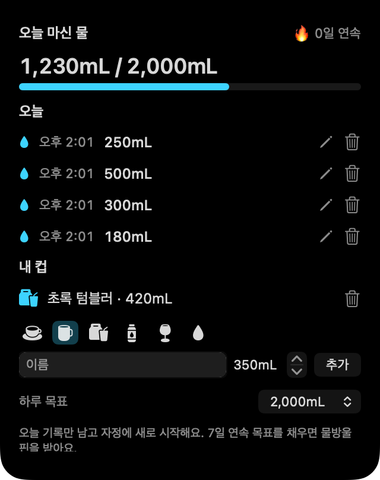
🙆 스트레칭 · 🎯 집중 타이머
쉬지 않고 오래 앉아 있으면 (기본 50분) 기지개 켜자고 말을 걸어요. 집중 타이머는 25분·50분 중에 고르고, 끝까지 마치면 노키가 뿌듯해하며 배도 불러요. 밤, 집중 중, 전체 화면일 땐 알림이 조용히 기다려요.
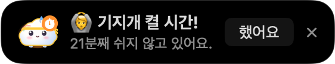
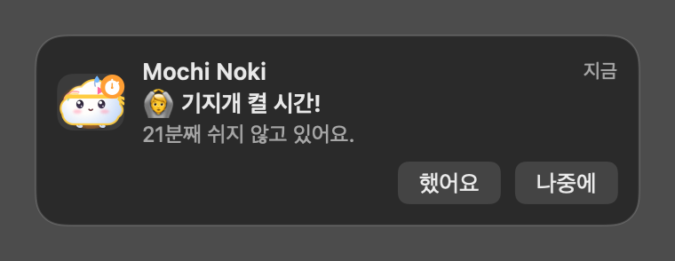
숫자나 시간 칸 위에서 휠을 굴리거나 트랙패드를 쓸어 올리면 바로 바뀌어요. 일정 날짜는 하루씩, 시간은 5분씩, 그리고 알림 시간, 습관 횟수와 분, 물 양, 컵 용량, 물 목표, 캘린더 알림까지 다 돼요.
라이트·다크, 맥을 따라가요
⚙️ → 일반 → 화면 모드에서 시스템(기본), 라이트, 다크를 골라요. 시스템으로 두면 맥이 밤에 다크로 바뀔 때 노키 패널도 그 자리에서 함께 바뀌어요. 노치 패널, 말풍선, 배너, 미니게임, 설정 카드까지 모두 두 모드를 지원해요.

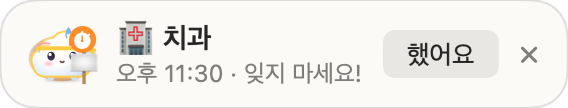
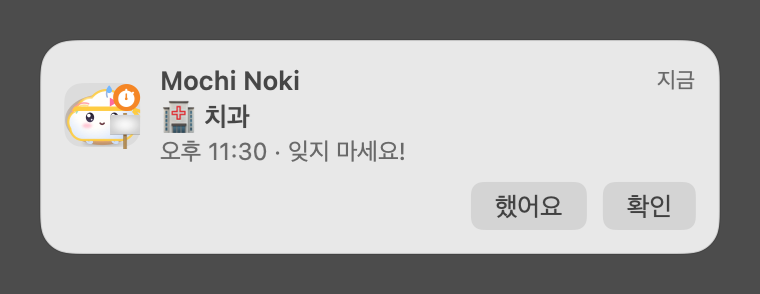
나만의 습관 캘린더
"책 10쪽 읽기", "치실 하루 2번", "기타 30분"처럼 습관을 만들고, 요일과 알림을 정해요. 집중·스트레칭·물 목표도 기본 습관으로 같이 보여요.
횟수 목표
+ 버튼으로 한 번씩 채워요. 다 채우면 체크, 연속으로 하면 🔥 숫자가 늘어요.
시간 목표
시작·종료 버튼으로 재요. 한 번에 하나씩, 앱을 껐다 켜도 이어지고, 자정이 지나면 날을 나눠 기록해요(한 번에 최대 4시간).
하루만 하는 습관
"엄마한테 전화"처럼 오늘 하루만 할 일도 습관으로 넣을 수 있어요.
한 달 캘린더
많이 한 날일수록 진해지고, 일정이 있는 날엔 점이 찍혀요.
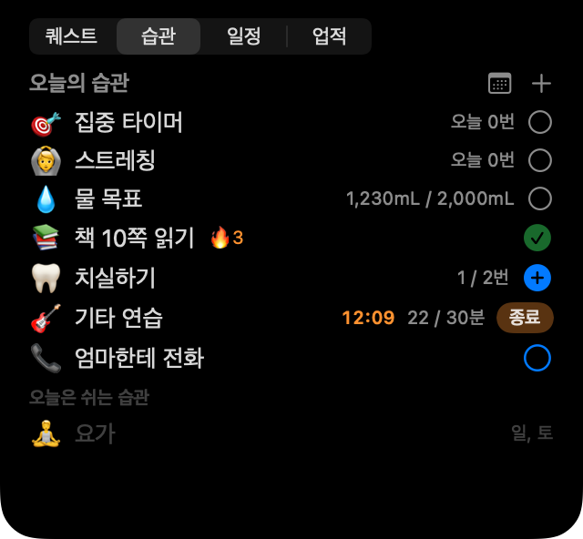
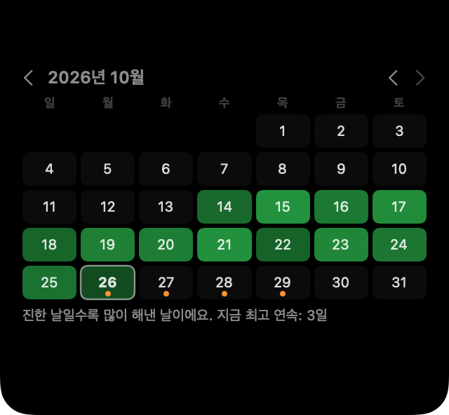
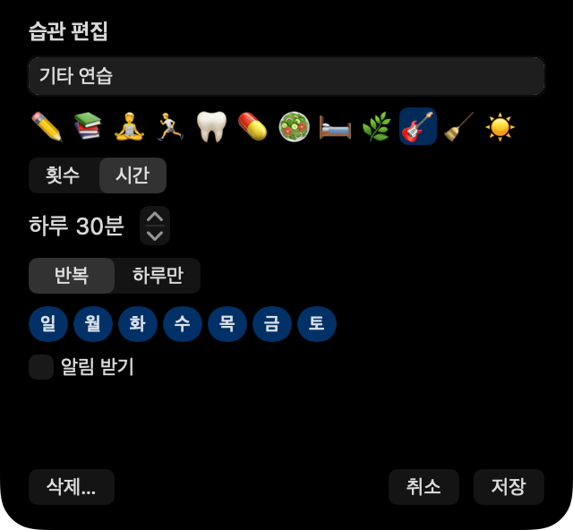
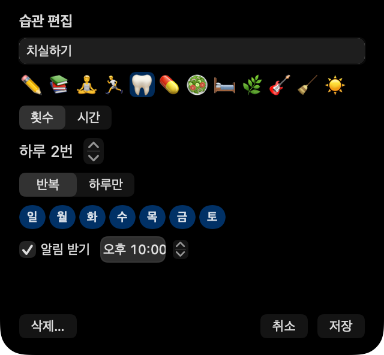
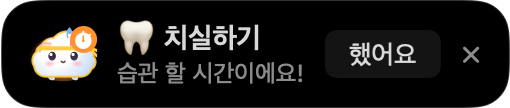
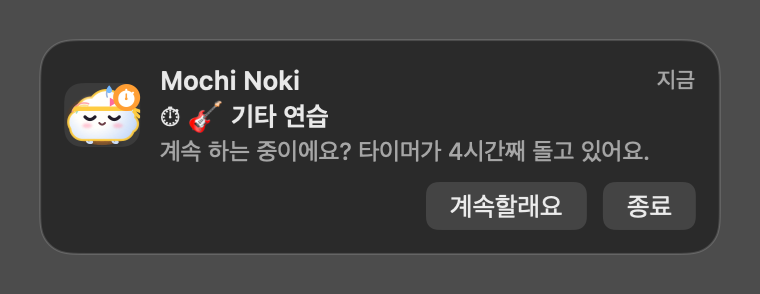
오늘 일정, 노키가 팻말 들고 알려 줘요
치과, 생일, 장보기 같은 간단한 일정을 제목·날짜·시간·메모로 넣어요. 정각이나 10분·30분 전에 노키가 팻말을 들고 알려 주고, "했어요"를 누르면 체크돼요. 시간 없이 "하루 종일"로 둘 수도 있고, 노키를 우클릭해 "일정 추가…"로 바로 넣을 수도 있어요. 홈 탭엔 다음 일정이 떠요.
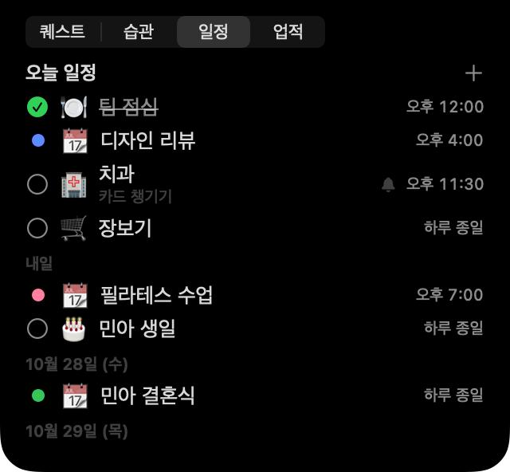
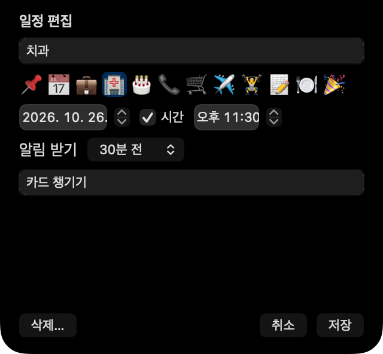
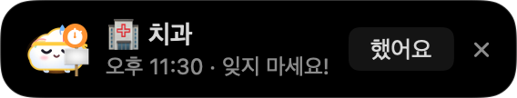
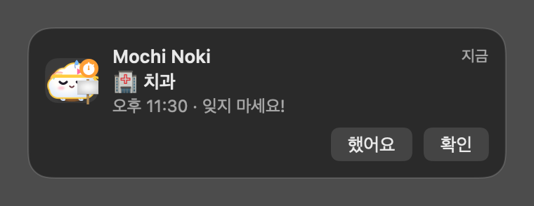
맥 캘린더와 연결해요 (선택)
⚙️ → 맥 캘린더에서 "캘린더 연결하기"를 누르면 캘린더 앱의 일정(추가해 둔 구글·iCloud 캘린더 포함)이 내 일정과 함께 시간순으로 보여요.
- 오늘부터 7일 동안의 일정을 읽어 일정 탭, 홈 탭의 다음 일정, 습관 캘린더 점에 같이 보여 줘요.
- 보여 줄 캘린더를 고르고, 알림(없음·정각·10분 전·30분 전)도 정해요. 노키가 팻말 들고 알려 줘요.
- "모찌 노키 일정을 캘린더에도 추가"를 켜면 여기서 만든 일정이 고른 캘린더(기본은 새 "Mochi Noki" 캘린더)에 들어가요. 켤 때 다가오는 일정도 같이 넣을지 물어봐요.
- 양방향: 캘린더 앱에서 그 일정의 제목·날짜·시간·메모를 고치면 모찌 노키에도 반영되고 알림 시간도 다시 맞춰요. 여기서 고치거나 지우면 캘린더 쪽도 같이 바뀌어요.
- 다른 일정은 읽기만 해요. 바꾸지도, 저장하지도 않아요.
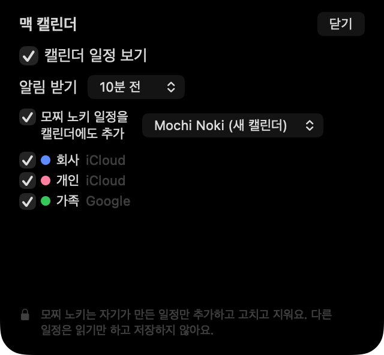
알에서 어른까지 함께 자라요
맥을 같이 쓰는 시간만큼 자라요. 배부르고 기분이 좋을수록 빨리 커요. 보통 하루 만에 부화하고, 이틀째 어린이, 열흘 남짓이면 어른이 돼요.
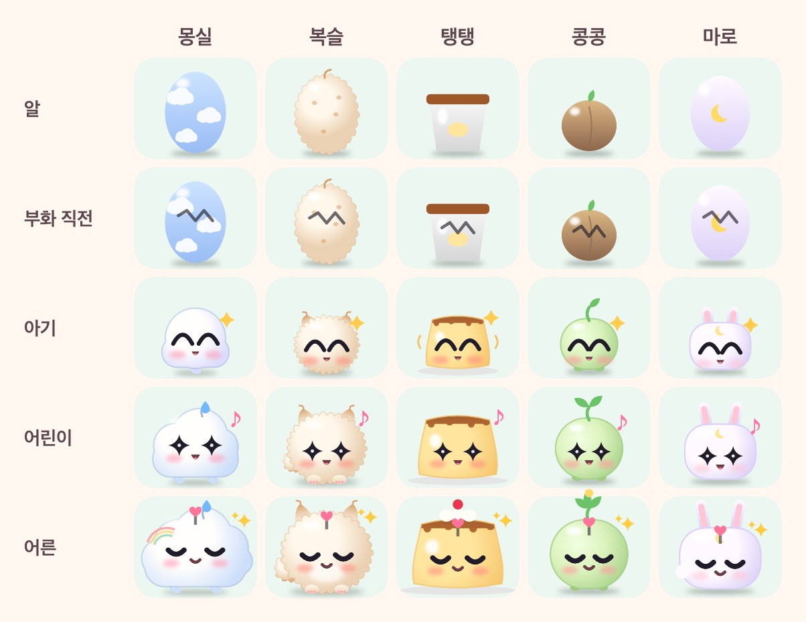
다섯 능력치가 어른 모습을 정해요
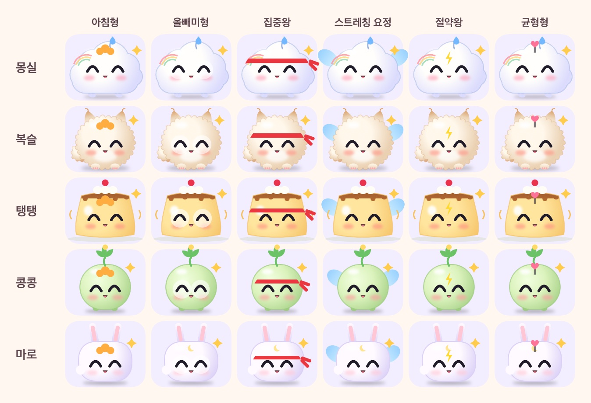
각성: 어른이 된 뒤에도 그 능력치를 꾸준히 키우면 금빛 테두리와 함께 각성해요. 해돋이 아침형, 달빛 올빼미, 불꽃 집중왕, 무지개 요정, 번개 절약왕, 후광 균형형.
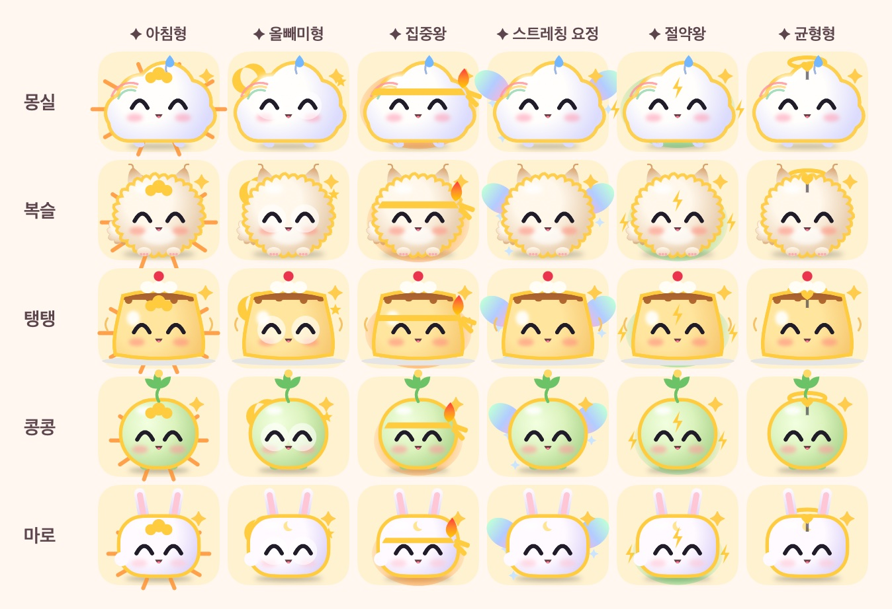
🎓 졸업과 앨범
다 자란 친구는 졸업시켜 앨범에 남기고 새 알을 키울 수 있어요. 앨범에서 언제든 다시 불러와요. 하루하루는 일기에 남아요.
✨ 레벨과 재주
어른이 된 뒤에도 레벨이 오르고 재주를 배워요: 👋 손 흔들기, 💃 춤, 🌀 빙글빙글, 🤸 물구나무, 😴 이불 덮고 낮잠, 🎆 불꽃놀이 등 열두 가지. 재주마다 동작과 효과가 달라요(음표, 회오리, 요술봉 반짝이, 꽃가루…). 아이콘에 마우스를 올리면 이름이 나와요.
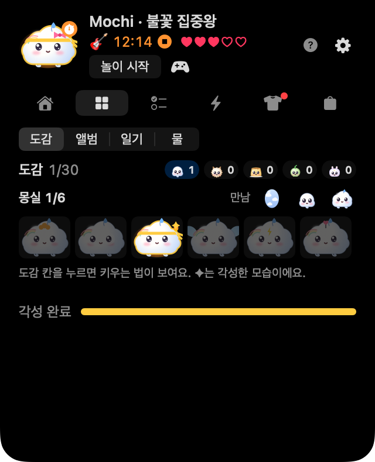
매일 퀘스트와 업적 35개
📝 오늘의 퀘스트
매일 퀘스트 3개가 나와요("물 목표의 75% 마시기", "펫과 3번 놀아 주기", "새벽에는 쉬기" 같은 것). 깨면 간식 🍪을 받고, 간식은 노키에게 끌어다 주면 냠냠 먹어요.
🏆 업적
성장, 몸 챙기기, 습관과 일정, 함께 놀기, 작은 순간들, 다섯 갈래로 35개가 있어요. 배지마다 진행 링이 차오르고, 누르면 조건이 보여요. 숨은 업적 5개는 ???로 가려져 있다가 우연히 열려요. 달성하면 간식을 받고, 노키가 축하 동작과 함께 뿌듯한 얼굴을 해요. 리본, 학사모 같은 옷도 업적으로 받아요. 이번 주·이번 달 반복 업적(물 목표 5일, 스트레칭 20번 같은 것)도 있어서, 달성할 때마다 간식을 받고 ×N이 늘어요.
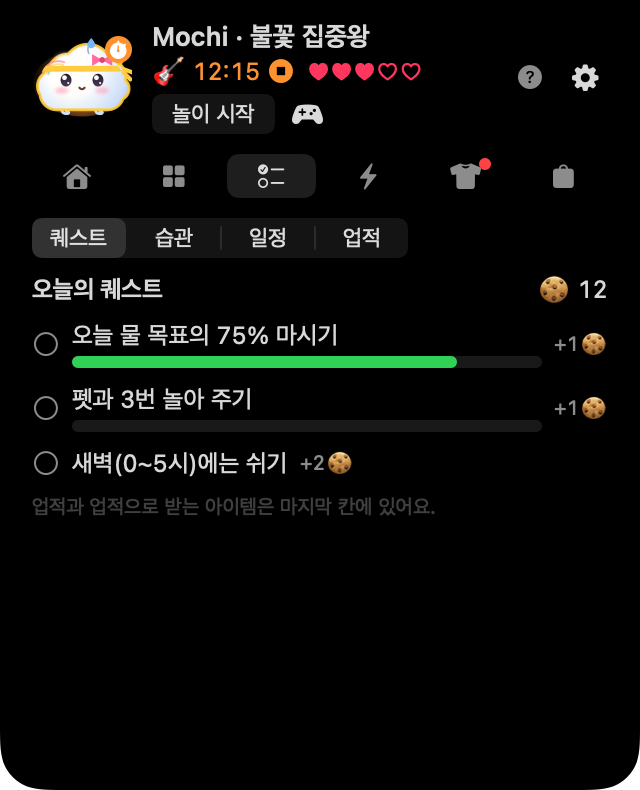
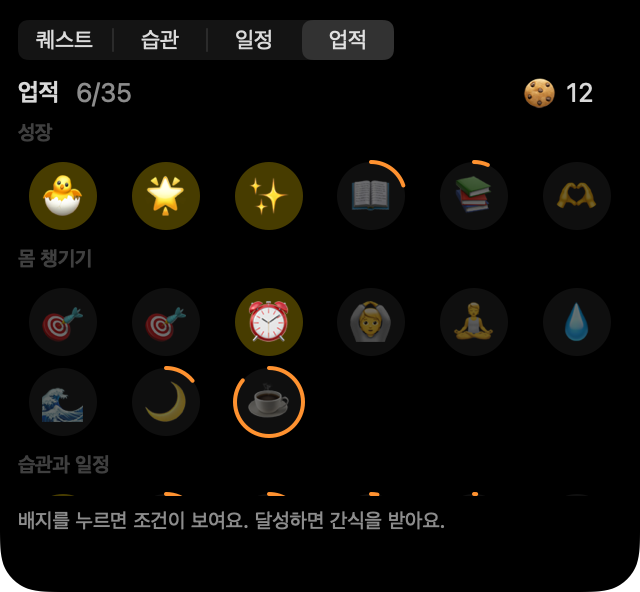
심심할 땐 같이 놀아요
노키 위에 커서를 올리면 쓰다듬기, 더블클릭하면 폴짝 뛰어요. "놀이 시작" 버튼이나 ⌥⌘P, 또는 노키를 아래로 끌어내리면 화면으로 놀러 나와요. 쉬는 시간에 "놀자!" 하고 물어볼 때도 있지만, 놀이는 내가 시작할 때만 열려요.
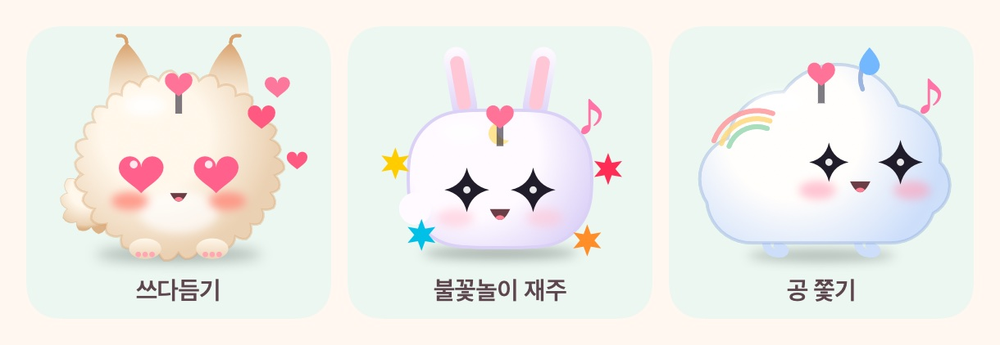
🎾 공놀이와 쓰다듬기
공을 던지면 쫓아가서 물어 와요. 쓰다듬으면 하트가 퐁퐁, 자꾸 문지르면 간지러워해요. 들고 마구 흔들면 눈이 뱅글뱅글 어지러워하고, 너무 많이 뛰면 헥헥 지쳐서 쉬어요.
🎮 미니게임
컵 섞기, 기다려!, 리듬 맞추기. 리듬 맞추기는 337 박수, 쿵짝짝 같은 리듬의 음표가 동그라미에 닿을 때 치는 게임이에요(25가지 리듬, 속도도 매번 달라요). 만점·좋아·아쉬워로 점수를 매기고, 기록은 Top 10으로 남아요.
⚡ 친구 대결
어린이가 되면 대결 코드를 메시지로 주고받아 대결해요. 서버 없이 두 코드로 결과가 정해지고, 서명이 있어 고친 코드는 거부돼요.
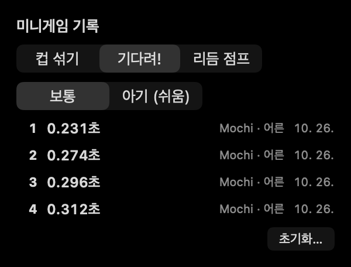
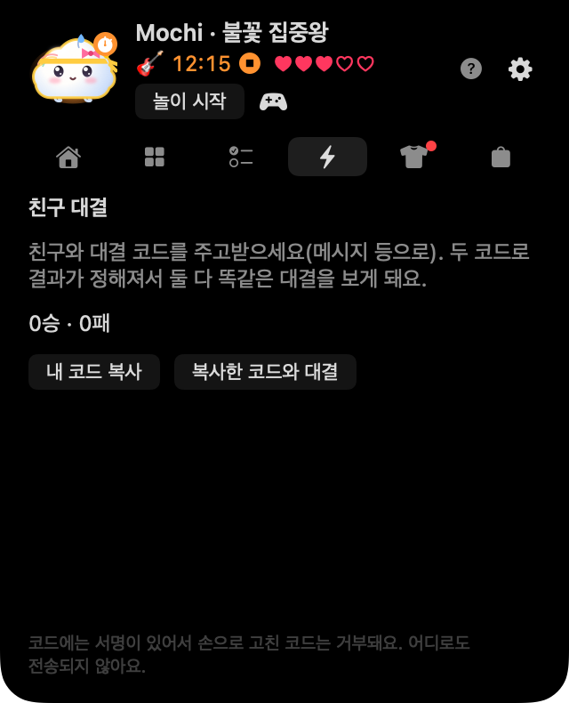
옷장에서 꾸며요
머리, 얼굴, 목, 등, 부위마다 하나씩 입혀요. 커서를 올리면 미리 입어 보고, 검색과 부위별 보기도 돼요. 업적과 계절 이벤트로 받는 옷도 있고, 습관과 퀘스트로 모은 간식으로 살 수 있는 옷도 있어요.
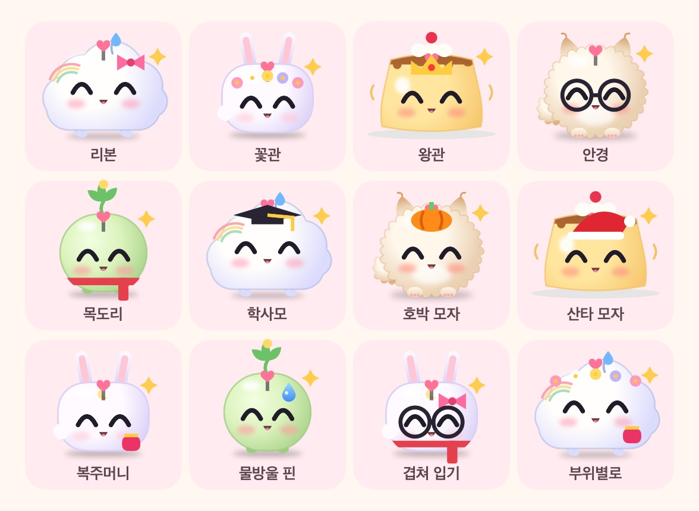
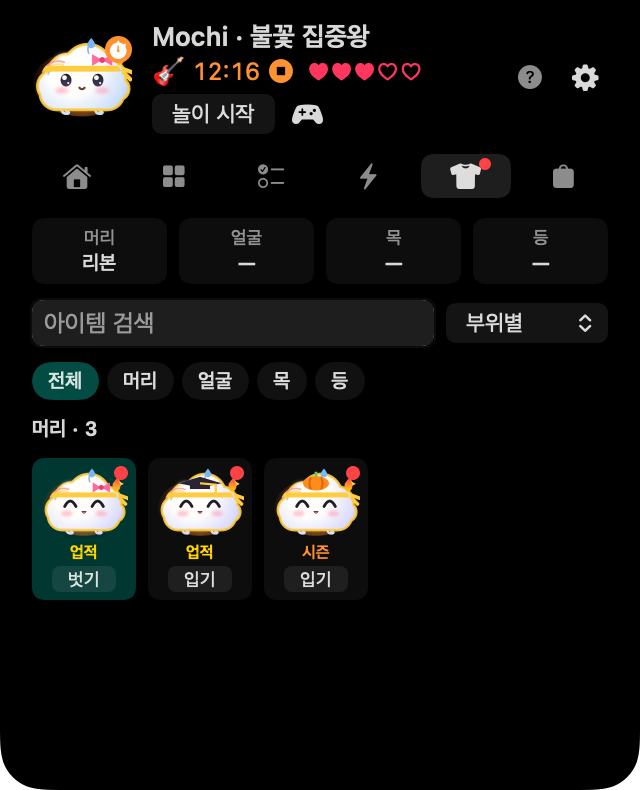
설정은 ⚙️ 하나로
한국어, English, 日本語, 简体中文, 繁體中文, Español, Français, Deutsch, Português(Brasil)를 지원해요. ? 버튼엔 키우는 법 안내가 있어요.
가볍고, 내 맥 안에만
🪶 가벼워요
노키의 숨쉬기는 그림을 다시 그리지 않는 방식이라, 평소 CPU 사용은 0%대예요. 화면이 잠들면 아예 쉬어요. 켜 둬도 배터리 걱정이 없어요.
🔒 내 맥에만
펫과 기록은 모두 이 맥에만 저장돼요. 계정도, 서버도 없어요. 날씨를 켰을 때만 도시 이름이 날씨 서버(Open-Meteo)로 가요. 캘린더 일정은 저장하지 않아요.
💾 백업
⚙️ → 데이터 → 백업 내보내기/불러오기로 파일 하나에 담아 옮겨요. 업데이트할 때는 이전 저장을 자동으로 보관해 둬요.
준비하고 있어요
모찌 노키는 지금 친구들과 함께 다듬는 중이에요. Mac App Store에서 만날 수 있게 되면 여기와 업데이트 소식에 알려 드릴게요.
- Apple 실리콘 맥(M1 이상), macOS 14 Sonoma 이상
- 노치가 없는 맥이나 외장 모니터에선 화면 위 가운데에 가상 노치가 생겨요. 메뉴 막대 아이콘으로 바꿀 수도 있어요.
- 다섯 친구와 핵심 기능은 모두 무료예요. Noki Plus(선택)는 습관 무제한, 매달 노키의 편지, 계절 한정 친구를 더해요.

노키랑 하루 지내 보고,
어떤 친구가 제일 마음에 드는지 들려주세요 💌
모든 그림은 앱의 실제 그리기 코드로 만들었어요.